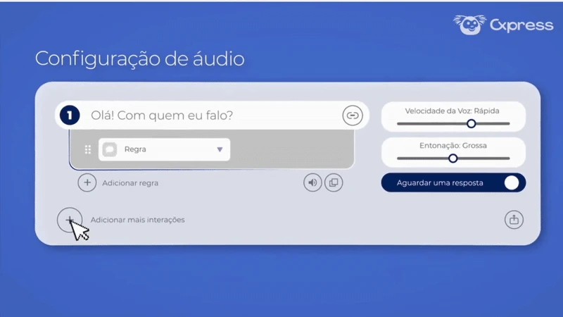

Voicebot a atender 24 horas por dia, 7 dias por semana
Cxpress.voz · telefone em nuvem
Transforme o atendimento telefónico com a IA da Cxpress.voz
Atenda um maior número de clientes em menos tempo, garantindo uma experiência mais personalizada e eficiente.
Unifica, simplifica e automatiza o atendimento da sua empresa
01 · Chamada a receber+351 912 ··· 408Linha principal · fora do horário
Telefonia e WhatsApp num único número
WhatsApp, e-mail, Facebook, Instagram, telefone e chat do site, de forma nativa
A IA faz o primeiro nível de atendimento e um colaborador trata o resto
Clientes que confiam na Cxpress para otimizar o seu atendimento
Quer saber mais? Fale connosco.
Explore a nossa plataforma na prática e obtenha uma avaliação gratuita da sua operação de atendimento com a orientação dos nossos especialistas.
Ao enviar este formulário, autoriza a Cxpress a tratar os seus dados para responder ao seu pedido. Saiba mais na Política de Privacidade.
Cxpress.voz
Eleve o nível do atendimento com a Cxpress
Saiba porquê:

Voicebot
Atendimento automatizado com Voicebot
Utilize os voicebots para um atendimento inteligente 24 horas por dia, 7 dias por semana, com respostas rápidas e personalizadas, elevando a qualidade do atendimento da sua empresa.
Escolha o motivo da chamada e veja o encaminhamento
Filas
Distribuição inteligente de chamadas
Aumente a satisfação dos clientes e a produtividade da equipa com uma tecnologia que organiza as chamadas, fornece instruções claras e direciona cada contacto para o colaborador mais adequado.
sem equipamentos físicos
Central na nuvem
Telefone totalmente digital
Modernize a sua central telefónica: realize as chamadas a partir do computador, telemóvel ou telefone IP, sem necessidade de equipamentos físicos.
128atendidas
00:18espera média
2perdidas
00:00 / 02:41
Exemplo ilustrativo
Dashboards
Insights com dashboards analíticos
Aceda às gravações das chamadas e analise métricas detalhadas em dashboards, permitindo uma gestão eficaz baseada em dados.
Omnicanal
Centralização em múltiplos canais
Integre telefonia e WhatsApp num único número e unifique o atendimento ao cliente em todos os canais: redes sociais, e-mail e outros, otimizando a comunicação.
Agende um diagnóstico gratuito da sua operação de atendimento com os nossos consultores especializados
Agendar
Plataforma Elife
Quem somos
A Cxpress é uma plataforma da ElifeGroup na nuvem que unifica e automatiza os canais de atendimento da sua empresa. WhatsApp, Redes Sociais, E-mail e Telefone juntos oferecem uma visão única e simplificada da interação com o cliente, desde o primeiro contacto até à resolução do caso.
O uso da Inteligência Artificial da Cxpress para automação das primeiras interações em linguagem natural e a gestão de filas otimizam a produtividade das equipas de atendimento.
Um produto ElifeAPI Oficial do WhatsAppAPI Oficial do Chat GPT
Perguntas frequentes
Dúvidas frequentes
Quais são os pré-requisitos para utilizar a Cxpress?
Para poder utilizar a ferramenta, é necessário ter um site ativo e um colaborador responsável pela administração da plataforma.
A inteligência artificial (IA) faz o atendimento sozinha?
Não. A IA da Cxpress realiza apenas o primeiro nível de atendimento (N1), a responder a perguntas sobre serviços e produtos. Um colaborador humano deve estar disponível para questões mais complexas que o chatbot não saiba responder ou quando o cliente pretender falar com um assistente humano.
Posso ligar mais do que um número à Cxpress?
Sim, é possível.
Que canais podem ser integrados?
Podem ser integrados de forma nativa o WhatsApp, o e-mail, as redes sociais (Facebook e Instagram), o telefone e o chat do site.
A plataforma é compatível com integração de CRM?
Sim, é possível integrar com sistemas de CRM, mas é necessária uma análise prévia da nossa equipa técnica, para garantir que tudo funciona na perfeição.